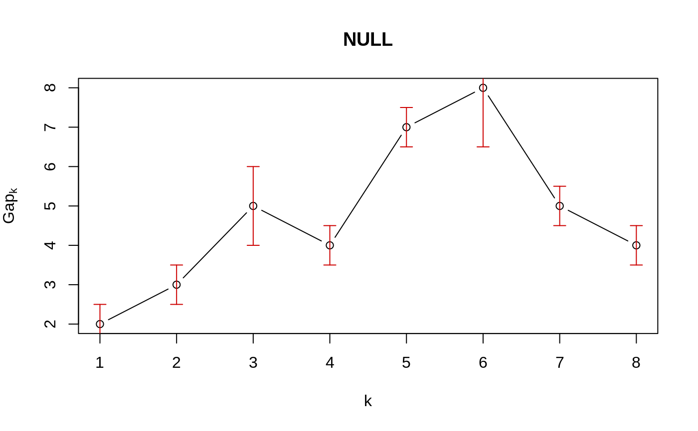
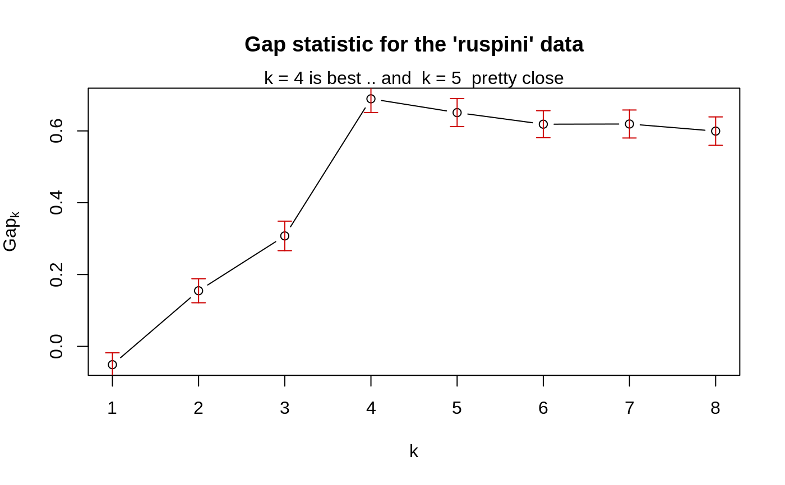
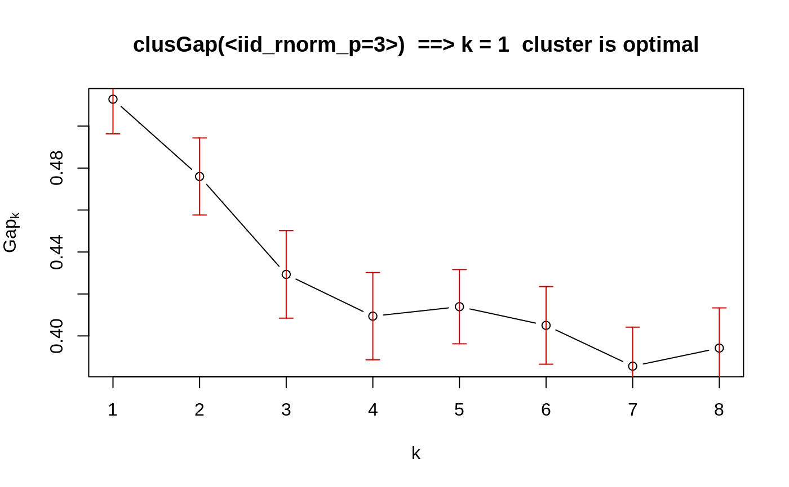

clusGap.RdclusGap() calculates a goodness of clustering measure, the
“gap” statistic. For each number of clusters \(k\), it
compares \(\log(W(k))\) with
\(E^*[\log(W(k))]\) where the latter is defined via
bootstrapping, i.e., simulating from a reference (\(H_0\))
distribution, a uniform distribution on the hypercube determined by
the ranges of x, after first centering, and then
svd (aka ‘PCA’)-rotating them when (as by
default) spaceH0 = "scaledPCA".
maxSE(f, SE.f) determines the location of the maximum
of f, taking a “1-SE rule” into account for the
*SE* methods. The default method "firstSEmax" looks for
the smallest \(k\) such that its value \(f(k)\) is not more than 1
standard error away from the first local maximum.
This is similar but not the same as "Tibs2001SEmax", Tibshirani
et al's recommendation of determining the number of clusters from the
gap statistics and their standard deviations.
clusGap(x, FUNcluster, K.max, B = 100, d.power = 1, spaceH0 = c("scaledPCA", "original"), verbose = interactive(), ...) maxSE(f, SE.f, method = c("firstSEmax", "Tibs2001SEmax", "globalSEmax", "firstmax", "globalmax"), SE.factor = 1) # S3 method for clusGap print(x, method = "firstSEmax", SE.factor = 1, ...) # S3 method for clusGap plot(x, type = "b", xlab = "k", ylab = expression(Gap[k]), main = NULL, do.arrows = TRUE, arrowArgs = list(col="red3", length=1/16, angle=90, code=3), ...)
| x | numeric matrix or |
|---|---|
| FUNcluster | a |
| K.max | the maximum number of clusters to consider, must be at least two. |
| B | integer, number of Monte Carlo (“bootstrap”) samples. |
| d.power | a positive integer specifying the power \(p\) which
is applied to the euclidean distances ( |
| spaceH0 | a |
| verbose | integer or logical, determining if “progress” output should be printed. The default prints one bit per bootstrap sample. |
| ... | (for |
| f | numeric vector of ‘function values’, of length \(K\), whose (“1 SE respected”) maximum we want. |
| SE.f | numeric vector of length \(K\) of standard errors of |
| method | character string indicating how the “optimal” number of clusters, \(\hat k\), is computed from the gap statistics (and their standard deviations), or more generally how the location \(\hat k\) of the maximum of \(f_k\) should be determined.
See the examples for a comparison in a simple case. |
| SE.factor | [When |
| type, xlab, ylab, main | arguments with the same meaning as in
|
| do.arrows | logical indicating if (1 SE -)“error bars”
should be drawn, via |
| arrowArgs | a list of arguments passed to |
The main result <res>$Tab[,"gap"] of course is from
bootstrapping aka Monte Carlo simulation and hence random, or
equivalently, depending on the initial random seed (see
set.seed()).
On the other hand, in our experience, using B = 500 gives
quite precise results such that the gap plot is basically unchanged
after an another run.
clusGap(..) returns an object of S3 class "clusGap",
basically a list with components
a matrix with K.max rows and 4 columns, named
"logW", "E.logW", "gap", and "SE.sim",
where gap = E.logW - logW, and SE.sim corresponds to
the standard error of gap, SE.sim[k]=\(s_k\),
where \(s_k := \sqrt{1 + 1/B} sd^*(gap_j)\), and \(sd^*()\) is the standard deviation of the
simulated (“bootstrapped”) gap values.
the clusGap(..) call.
the spaceH0 argument (match.arg()ed).
number of observations, i.e., nrow(x).
input B
input function FUNcluster
Tibshirani, R., Walther, G. and Hastie, T. (2001). Estimating the number of data clusters via the Gap statistic. Journal of the Royal Statistical Society B, 63, 411--423.
Tibshirani, R., Walther, G. and Hastie, T. (2000). Estimating the number of clusters in a dataset via the Gap statistic. Technical Report. Stanford.
Dudoit, S. and Fridlyand, J. (2002) A prediction-based resampling method for estimating the number of clusters in a dataset. Genome Biology 3(7). doi: 10.1186/gb-2002-3-7-research0036
Per Broberg (2006). SAGx: Statistical Analysis of the GeneChip. R package version 1.9.7. http://www.bioconductor.org/packages/release/bioc/html/SAGx.html
silhouette for a much simpler less sophisticated
goodness of clustering measure.
cluster.stats() in package fpc for
alternative measures.
### --- maxSE() methods ------------------------------------------- (mets <- eval(formals(maxSE)$method))#> [1] "firstSEmax" "Tibs2001SEmax" "globalSEmax" "firstmax" #> [5] "globalmax"fk <- c(2,3,5,4,7,8,5,4) sk <- c(1,1,2,1,1,3,1,1)/2 ## use plot.clusGap(): plot(structure(class="clusGap", list(Tab = cbind(gap=fk, SE.sim=sk))))## Note that 'firstmax' and 'globalmax' are always at 3 and 6 : sapply(c(1/4, 1,2,4), function(SEf) sapply(mets, function(M) maxSE(fk, sk, method = M, SE.factor = SEf)))#> [,1] [,2] [,3] [,4] #> firstSEmax 3 3 2 1 #> Tibs2001SEmax 3 3 1 1 #> globalSEmax 6 5 3 1 #> firstmax 3 3 3 3 #> globalmax 6 6 6 6### --- clusGap() ------------------------------------------------- ## ridiculously nicely separated clusters in 3 D : x <- rbind(matrix(rnorm(150, sd = 0.1), ncol = 3), matrix(rnorm(150, mean = 1, sd = 0.1), ncol = 3), matrix(rnorm(150, mean = 2, sd = 0.1), ncol = 3), matrix(rnorm(150, mean = 3, sd = 0.1), ncol = 3)) ## Slightly faster way to use pam (see below) pam1 <- function(x,k) list(cluster = pam(x,k, cluster.only=TRUE)) ## We do not recommend using hier.clustering here, but if you want, ## there is factoextra::hcut () or a cheap version of it hclusCut <- function(x, k, d.meth = "euclidean", ...) list(cluster = cutree(hclust(dist(x, method=d.meth), ...), k=k)) ## You can manually set it before running this : doExtras <- TRUE # or FALSE if(!(exists("doExtras") && is.logical(doExtras))) doExtras <- cluster:::doExtras() if(doExtras) { ## Note we use B = 60 in the following examples to keep them "speedy". ## ---- rather keep the default B = 500 for your analysis! ## note we can pass 'nstart = 20' to kmeans() : gskmn <- clusGap(x, FUN = kmeans, nstart = 20, K.max = 8, B = 60) gskmn #-> its print() method plot(gskmn, main = "clusGap(., FUN = kmeans, n.start=20, B= 60)") set.seed(12); system.time( gsPam0 <- clusGap(x, FUN = pam, K.max = 8, B = 60) ) set.seed(12); system.time( gsPam1 <- clusGap(x, FUN = pam1, K.max = 8, B = 60) ) ## and show that it gives the "same": not.eq <- c("call", "FUNcluster"); n <- names(gsPam0) eq <- n[!(n %in% not.eq)] stopifnot(identical(gsPam1[eq], gsPam0[eq])) print(gsPam1, method="globalSEmax") print(gsPam1, method="globalmax") print(gsHc <- clusGap(x, FUN = hclusCut, K.max = 8, B = 60)) }# end {doExtras} gs.pam.RU <- clusGap(ruspini, FUN = pam1, K.max = 8, B = 60) gs.pam.RU#> Clustering Gap statistic ["clusGap"] from call: #> clusGap(x = ruspini, FUNcluster = pam1, K.max = 8, B = 60) #> B=60 simulated reference sets, k = 1..8; spaceH0="scaledPCA" #> --> Number of clusters (method 'firstSEmax', SE.factor=1): 4 #> logW E.logW gap SE.sim #> [1,] 7.187997 7.136986 -0.05101103 0.03302558 #> [2,] 6.628498 6.783334 0.15483620 0.03342620 #> [3,] 6.261660 6.569243 0.30758376 0.04110513 #> [4,] 5.692736 6.382139 0.68940274 0.03830180 #> [5,] 5.580999 6.231987 0.65098780 0.03900937 #> [6,] 5.500583 6.119283 0.61869983 0.03754351 #> [7,] 5.394195 6.013466 0.61927144 0.03895899 #> [8,] 5.320052 5.919497 0.59944507 0.03956904mtext("k = 4 is best .. and k = 5 pretty close")## This takes a minute.. ## No clustering ==> k = 1 ("one cluster") should be optimal: Z <- matrix(rnorm(256*3), 256,3) gsP.Z <- clusGap(Z, FUN = pam1, K.max = 8, B = 200) plot(gsP.Z, main = "clusGap(<iid_rnorm_p=3>) ==> k = 1 cluster is optimal")gsP.Z#> Clustering Gap statistic ["clusGap"] from call: #> clusGap(x = Z, FUNcluster = pam1, K.max = 8, B = 200) #> B=200 simulated reference sets, k = 1..8; spaceH0="scaledPCA" #> --> Number of clusters (method 'firstSEmax', SE.factor=1): 1 #> logW E.logW gap SE.sim #> [1,] 4.929175 5.441996 0.5128202 0.01651083 #> [2,] 4.781765 5.257759 0.4759939 0.01836688 #> [3,] 4.682839 5.112167 0.4293272 0.02086095 #> [4,] 4.596303 5.005715 0.4094124 0.02078972 #> [5,] 4.501172 4.915102 0.4139299 0.01768952 #> [6,] 4.432367 4.837395 0.4050278 0.01849280 #> [7,] 4.386125 4.771698 0.3855738 0.01860643 #> [8,] 4.321455 4.715671 0.3942156 0.01913339